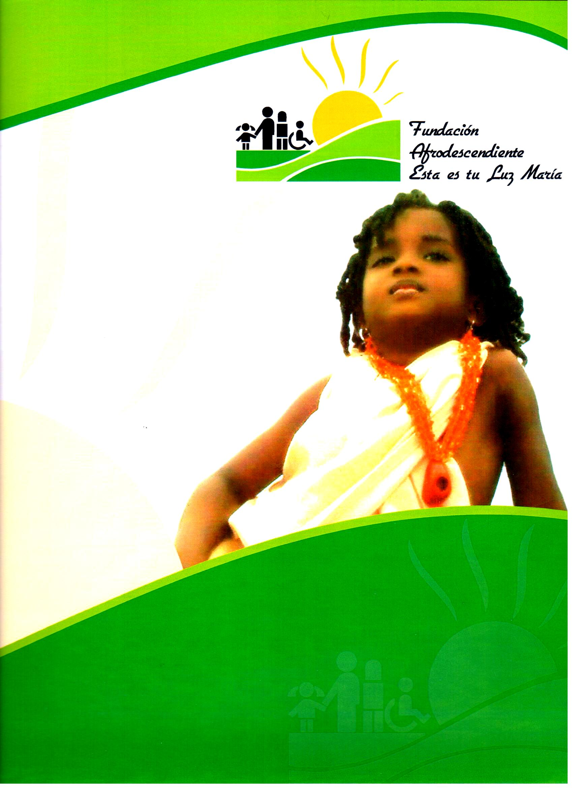

MISION
Ser una institución de carácter social, sin ánimo de lucro que protege los derechos de los niños, niñas, adolescentes, jóvenes, adultos y ancianos, en alto riesgo procedentes de zonas marginales de la ciudad, situaciones de peligro físico – moral, que brinde una acogida cálida, con programas de apoyo nutricional, escolar a nivel interno y externo, capacitación en artes y oficios, orientación laboral, atención en psicología, salud, nutrición, Fonoaudiología, trabajo social, educación en problemas de aprendizaje ,orientación a sus familias en la búsqueda del mejoramiento de la calidad de vida, desde una perspectiva de los derechos de la niñez que les permita un fortalecimiento de su ser para un apto desenvolvimiento social.
VISION
En un plazo de cinco años, ser una institución líder en procesos de desarrollo individual, familiar, social y de derecho que optimice el proyecto de vida de todas las comunidades desprotegidas, garantizando los derechos fundamentales de los niños niñas, adolescentes, jóvenes, adultos y ancianos como: al desarrollo, a la supervivencia, a la protección y participación buscando el mejoramiento en su calidad de vida, convertida en una institución modelo de identificación para el resto de la comunidad en especial para quienes trabajan con la infancia, cofinanciados por instituciones gubernamentales de orden nacional, departamental, municipal u ONGS nacionales e internacionales y nuestro propio esfuerzo.
NUESTROS PROFESIONALES
Nuestra fundacion cuenta con un grupo de profesionales altamente capacitados, con experiencia y comprometidos con el desarrollo de los programas que ofrecemos como son:
Médicos, odontólogos, trabajador social, psicólogos, fisioterapeutas, ingeniero ambiental, ingeniero de sistemas, abogados, ingeniero civil, contador, promotores de salud entre otros.